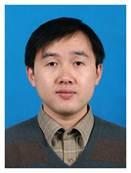

|  |
Kang ChenResearcherDepartment of Computer Science & Technology Tsinghua University Address: FIT 3-107, Tsinghua University, Beijing, P. R. China, 100084 Email: chenkang@tsinghua.edu.cn Tel: 86-10-62783505 [ Education | Teaching | Publications] |
I am now teaching the graduate course of “Introduction to Distributed System” as well as the undergraduate course of “Big Data Processing using Clusters”. At the same time, I am doing some researches in distributed systems. My research group has done several works on distributed storage. We have improved the performance of erasure coding in gluster file system and ceph file system. This is done by using the vector and streaming instructions provided by Intel CPUs. After that, we have developed the technic of object partitioning for regenerating codes. We have also done some work related on how to harness the powerful network such as InfiniBand RDMA. And now, we want to combine RDMA together with remote NVM. My research group also has done several work related to (distributed) graph computing. In addition, I am also interested in the topic of blockchain.
Education
- 2004 Tsinghua University Computer Science & Technology Ph.D.
- 1999 Tsinghua University Computer Science & Technology B.S.
Teaching
- Undergraduate: Computer Organization
- Undergraduate: Big Data Processing using Clusters
- Graduate: Introduction to Distributed Systems
Selected Publications
-
NosWalker: A Decoupled Architecture for Out-of-Core Random Walk Processing
28th ACM International Conference on Architectural Support for Programming Languages and Operating Systems (ASPLOS 2023) -
Achieving Sub-second Pairwise Query over Evolving Graphs
28th ACM International Conference on Architectural Support for Programming Languages and Operating Systems (ASPLOS 2023) -
TEA: A General-Purpose Temporal Graph Random Walk Engine
The 18th European Conference on Computer Systems (EuroSys 2023)
-
A Survey of Storage Systems in the RDMA Era
IEEE Transactions on Parallel and Distributed Systems (TPDS)
-
SeqDLM: a Sequencer-based Distributed Lock Manager for Efficient Shared File Access in a Parallel File System
The International Conference for High Performance Computing, Networking, Storage, and Analysis (SC 2022)
-
T-GCN: A Sampling Based Streaming Graph Neural Network System With Hybrid Architecture
31st International Conference on Parallel Architectures and Compilation Techniques (PACT 2022)
-
libcrpm: Improving the Checkpoint Performance of NVM
59th Design Automation Conference (DAC 2022)
-
TeGraph: A Novel General-Purpose TemporalGraph Computing Engine
38th IEEE International Conference on Data Engineering (ICDE 2022)
-
Geometric Partitioning: Explore the Boundary of Optimal Erasure Code
Repair
28th ACM Symposium on Operating Systems Principles (SOSP 2021).
-
Random Walks on Huge Graphs at Cache Efficiency
28th ACM Symposium on Operating Systems Principles (SOSP 2021).
-
ROART: Range-query Optimized Persistent
ART
19th USENIX Conference on File and Storage Technologies (FAST 2021).
-
Lessons Learned from Optimizing the Sunway
Storage System for Higher Application I/O Performance
Journal of Computer Science and Technology (JCST), 2020, Vol. 35, Issue 1, pp. 47-60.
-
3-D Partitioning for Large-scale Graph
Processing
IEEE Transactions on Computers (TC), 2020.
-
Occlum: Secure and Efficient Multitasking
Inside a Single Enclave of Intel SGX
,
24th ACM International Conference on Architectural Support for Programming Languages and Operating Systems (ASPLOS 2020)
-
AsymNVM: AnEfficient Framework for
Implementing Persistent Data Structures on Asymmetric NVM Architecture
,
24th ACM International Conference on Architectural Support for Programming Languages and Operating Systems (ASPLOS 2020)
-
KnightKing: A Fast Distributed Graph Random
Walk Engine
,
27th ACM Symposium on Operating Systems Principles (SOSP 2019)
-
X-RDMA: Effective RDMA Middleware in
Large-scale Production Environments
,
21th IEEE International Conference on Cluster Computing (Cluster 2019)
-
Building Scalable NVM-based B+tree with
HTM
,
International Conference on Parallel Processing (ICPP), 2019
-
RF-RPC: Remote Fetching RPC Paradigm for
RDMA-Enabled Network
,
IEEE Transactions on Parallel and Distributed Systems (TPDS), 2019, Vol. 30, Issue 7, pp. 1657-1671
-
To Isolate, or to Share? That is a Question
for Intel SGX
9th ACM SIGOPS Asia-Pacific Workshop on Systems (APSys 2018)
-
CLIP: A Disk I/O Focused Parallel
Out-of-core Graph Processing System
,
IEEE Transactions on Parallel and Distributed Systems (TPDS), 2019, Vol. 30, Issue 1, pp. 45-62
-
ReGraph: A Graph Processing Framework that
Alternately Shrinks and Repartitions the Graph
32nd ACM International Conference on Supercomputing (ICS 2018)
-
Wonderland: A Novel Abstraction-Based
Out-Of-Core Graph Processing System
23rd Architectural Support for Programming Languages and Operating Systems (ASPLOS 2018)
-
GraphP: Reducing Communication of
PIM-based Graph Processing with Efficient Data Partition
24th IEEE International Symposium on High-Performance Computer Architecture (HPCA 2018)
-
DudeTx: Durable Transactions Made
Decoupled
,
ACM Transactions on Storage (ToS), 2018, Vol. 14, Issue 1, pp. 7:1-7:28
-
Squeezing out All the Value of Loaded Data:
An Out-of-core Graph Processing System with Reduced Disk I/O
2017 USENIX Annual Technical Conference (ATC 2017)
-
RFP: When RPC is Faster than
Server-Bypass with RDMA
12th European Conference on Computer Systems Systems (EuroSys 2017)
-
High Performance Graph Processing with
Locality Oriented Design
,
IEEE Transactions on Computers (ToC), 2017, Vol. 66, Issue 7, pp.1261-1267
-
DudeTM: Building Durable Transactions
with Decoupling for Persistent Memory
22nd Architectural Support for Programming Languages and Operating Systems (ASPLOS 2017)
-
Evolution of Cloud Operating System: From
Technology to Ecosystem
Journal of Computer Science and Technology, 2017, Vol. 32, Issue 2, pp. 224–241
-
Exploring the Hidden Dimension in Graph
Processing
12th USENIX Symposium on Operating Systems Design and Implementation (OSDI 2016)
-
Measuring and Optimizing Distributed
Array Programs
42nd International Conference on Very Large Data Bases (VLDB 2016)
-
Systematic Data Placement Optimization in
Multi-Cloud Storage for Complex Requirements
IEEE Transactions on Computers (ToC), 2016, Vol. 65, Issue 6, pp.1964-1977
-
MARS: Mobile Application Relaunching Speed-up
through Flash-Aware Page Swapping
IEEE Transactions on Computers (ToC), 2016, Vol. 65, Issue 3, pp.916-928
-
What is Wrong With the
Transmission? — A Comprehensive Study on Message Passing Related Bugs
44th International Conference on Parallel Processing (ICPP 2015)
-
Bidding for Highly Available Services with
Low Price in Spot Instance Market
24th International ACM Symposium on High-Performance Parallel and Distributed Computing (HPDC 2015)
-
When Paxos Meets Erasure Code: Reduce
Network and Storage Cost in State Machine Replication
23rd International ACM Symposium on High-Performance Parallel and Distributed Computing (HPDC 2014)
-
Modeling of Distributed File Systems for
Practical Performance Analysis
IEEE Transactions on Parallel and Distributed Systems (TPDS), 2014, Vol. 25, No. 1, pp.156-166
-
Liquid: A Scalable Deduplication File
System for Virtual Machine Images
IEEE Transactions on Parallel and Distributed Systems (TPDS), 2014, Vol. 25, No. 5, pp.1257-1266
-
Distributed File Streamer: A Framework for
Distributed Application Data Coupling
The 7th IEEE/ACM International Conference on Grid Computing (GRID 2006)
-
Accessor Variety Criteria for Chinese Word
Extraction
Computational Linguistics, Volume 30, Number 1, 1 March 2004